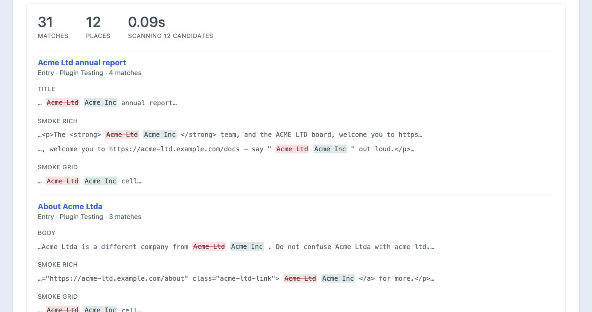
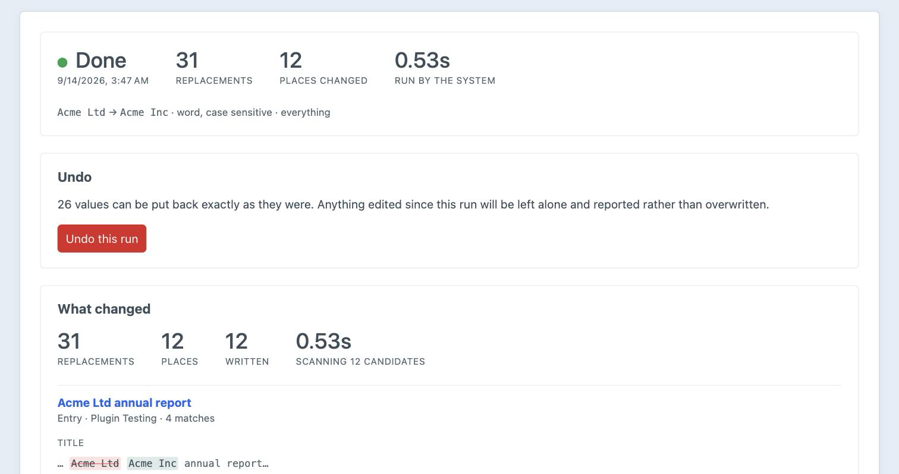
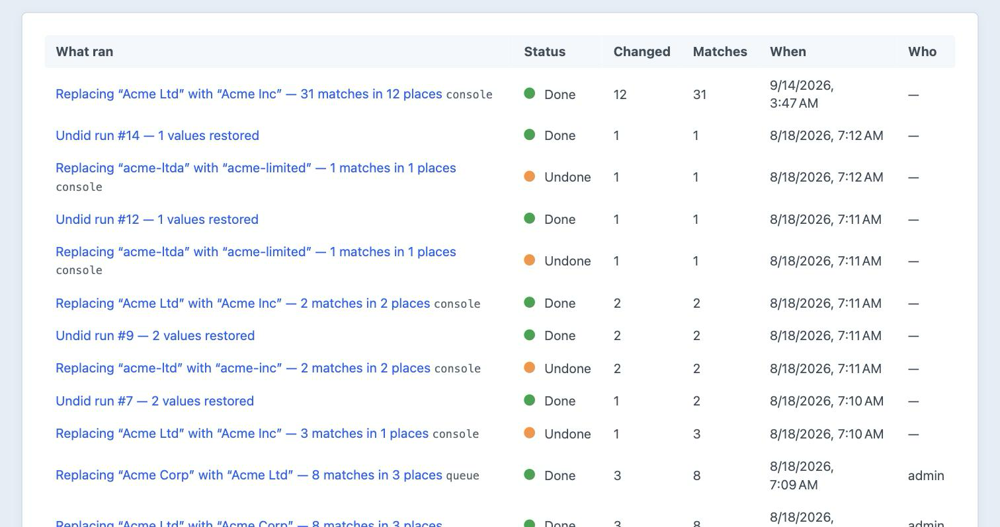
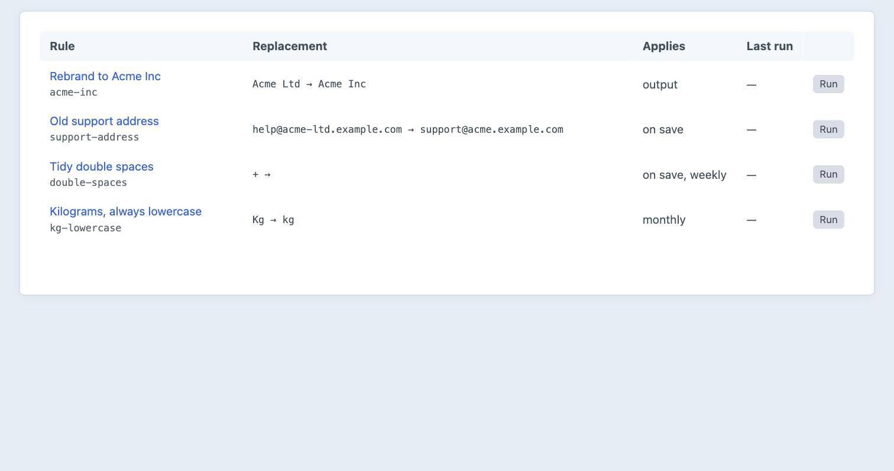

Find and replace with a preview, a scope and an undo.
Craft’s own utility has none of those, and leaves your search index describing content that no longer exists.
In twelve places, each one shown in context with the old text and the new text side by side — while nothing has changed yet.
The same method, with one boolean deciding whether the result is written or thrown away.
The preview lists each place it matched, the field it is in, and the exact text before and after.

Plain, whole words only, or a regular expression with capture groups.
“Acme Ltd” becomes “Acme Inc”, not “acme inc” — which is what word-by-word buys you.
Every changed value is stored before and after, and undo restores the original rather than running the replacement backwards.

What was searched for, what replaced it, how much changed, who ran it, and whether it has been undone.

Saved rules run on demand, on save, on a schedule, or as pages render without touching the database at all.
